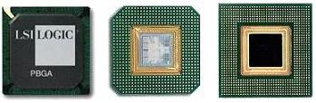
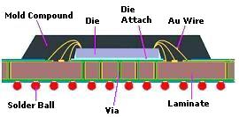
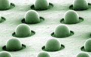
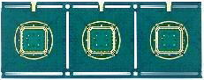

|
Ball Grid Array (BGA)
Ball Grid Array,
or
BGA,
is a
surface-mount package that utilizes an array of metal spheres or balls
as the means of providing external electrical interconnection, as
opposed to the pin-grid array (PGA) which uses an array of leads for
that purpose. The balls are composed of solder, and are attached
to a laminated substrate at the bottom side of the package. The die of the BGA is connected to the substrate either by
wirebonding or
flip-chip
connection. The substrate of a BGA has internal conductive traces
that route and connect the die-to-substrate bonds to the substrate-to-ball array
bonds.
The main
advantage of BGA as a packaging solution for integrated circuits is its
high interconnection density, i.e., the number of pins (or balls,
rather) that it offers per given package volume is high. A related
advantage arising from this high I/O density is its small board space
occupation.

Figure 1.
Examples of BGA packages; the leftmost photo is a top view image
In addition,
assembly of BGA onto circuit boards is more manageable in comparison to
its leaded counterparts of the same pin count, mainly because the solder
needed for board mounting already come from the solder balls themselves,
which are factory-applied in precise form and size during the assembly
of BGA itself. Balls also tend to
'self-align'
to their attachment sites during board mounting.
The BGA is
attached to the circuit board using a reflow oven, which melts the
solder balls. The solder balls are already
matched in position with their respective attachment sites on the
circuit board as this happens. The surface tension of the molten solder
ball keeps the package aligned in its proper location on the board, until the
solder cools and solidifies. Good control of the board soldering
process and temperature is required to prevent the solder balls from
shorting with each other.

Figure 2.
Cross-section of a wirebonded PBGA package
Another
advantage offered by BGA is the lower thermal resistance between itself
and the circuit board due to the following reasons: 1) the relatively short distance between them;
2) the excellent thermal properties of the substrate; and 3) the use of
thermally-enhancing features such as thermal vias within the substrate
and thermal balls under it. These allow the heat generated by the device inside the BGA to flow more
freely to the board, resulting in better heat dissipation for the device
that helps keep it from overheating.
The shorter
path provided by the BGA between the die and the circuit board also
leads to better electrical performance, since the shorter path
introduces lesser inductance, in effect minimizing distortion of signals
in high speed applications. Power and ground planes may also be
designed into the substrates to reduce ground and power inductance.
All packages
have drawbacks, and the BGA is no exception. Its disadvantages
include: 1) the inability of the solder balls to flex, such that
thermo-mechanical and flexural stresses from the circuit board can
easily be transmitted to the package and its joints, leading to
potential reliability issues; and 2) the difficulty of inspecting the
balls and solder joints for defects once the BGA has been soldered onto
the board.

Figure 3.
Solder Balls on a BGA package
Plastic ball
grid array (or PBGA), is a type of BGA that either has a plastic-molded
or glob-top encapsulated body. It was originally developed by Motorola
in the late 1980's for applications with space and weight limitations.
PBGA body sizes range from 7 to 50 mm, with ball pitches of 1.00, 1.27,
and 1.50 mm. PBGA pin counts, as of this writing, range from 16 to 2401
pins.
The laminated substrate
of a PBGA is usually composed of glass-reinforced organic material that
has excellent thermal properties (high Tg, high temperature stability,
and low heat resistance), such as Bismaleimide-Triazine (BT).
The conductive traces within the substrate are usually in the form of
etched copper foils bonded to it.
The assembly of PBGA's is usually
accomplished on a per substrate strip basis, with each strip holding
several package sites.

Figure 4.
Example of a strip of future BGA packages
A die is
attached to every die pad or flag on the substrate strip, and then
electrically connected to its substrate's routers either by wirebonding
or through the bumps on its bond pads is
flip chip connection is
employed. The die and wires are then encapsulated either by cavity
molding with epoxy molding compound or by glob-topping with a liquid encapsulant. The glob-top material is usually contained to its
specific form and volume with a dam.
After
encapsulation, solder ball preforms are placed on the solder pads of the
bottom surface of the substrate strip, which are then reflowed to form
the final solder balls under the PBGA package. Once the solder balls
have been formed, the packages are singulated from the strip either by shearing
with a carbide-tipped tool, by routing with a programmable router, or by
cutting with a diamond wheel.
Figure 5.
Example of an automated
routing
machine for singulating BGA's
See Also:
PBGA;
CBGA; FPBGA or FBGA;
LFBGA;
TFBGA; VFBGA;
Die Attach;
Wirebonding;
Molding;
Sealing;
Marking;
Flip Chip
Assembly; TAB Assembly;
IC
Manufacturing;
Assembly Equipment;
Solder Paste Printing
HOME
Copyright
© 2004
www.EESemi.com.
All Rights Reserved.
|